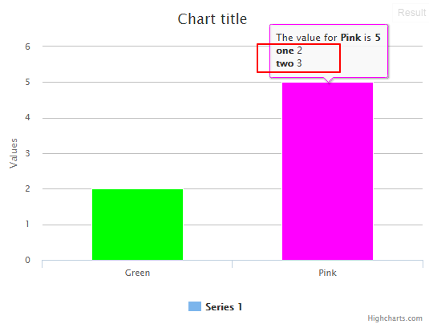

Task: Show information about types in tooltip - 01 November, 2014
Tags: javascript
The value of a point is the sum of values of types ('one', 'two'). Link - 26 December, 2014

The code:
$(function () {
$('#container').highcharts({
chart: {
type: 'column'
},
tooltip: {
formatter: function () {
var typeInf = '';
var types = this.point.Types;
$.each(types, function (index) {
typeInf += '<b>' + types[index][0] + '</b> ' + types[index][1] + '<br/>';
});
return 'The value for <b>' + this.x +
'</b> is <b>' + this.y + '</b><br/>' + typeInf;
}
},
xAxis: {
categories: ['Green', 'Pink']
},
series: [{
data: [{
name: 'Point 1',
Types: [["one", 1], ["two", 1]],
color: '#00FF00',
y: 2
}, {
name: 'Point 2',
Types: [["one", 2], ["two", 3]],
color: '#FF00FF',
y: 5
}]
}]
});
});